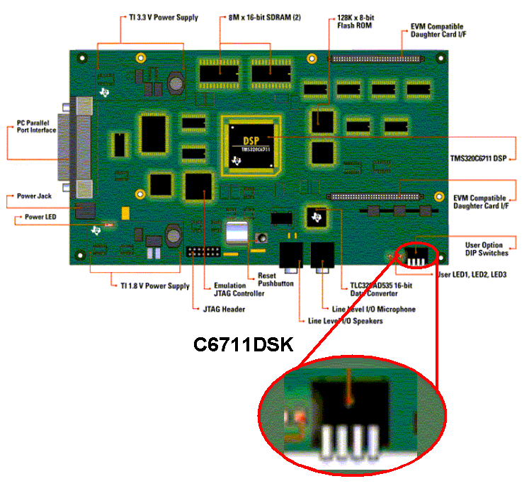

Finding the C6711 DSK User DIP Switches
Some Embedded Target for TI C6000 DSP demos require you to press
down user DIP switches on the C6711 DSK, for example
USER_SW1.
You can find the
user DIP switches at the lower-right corner of the circuit board.

The switches are numbered from left to right, starting with USER_SW1.
Copyright 2002 The MathWorks, Inc.